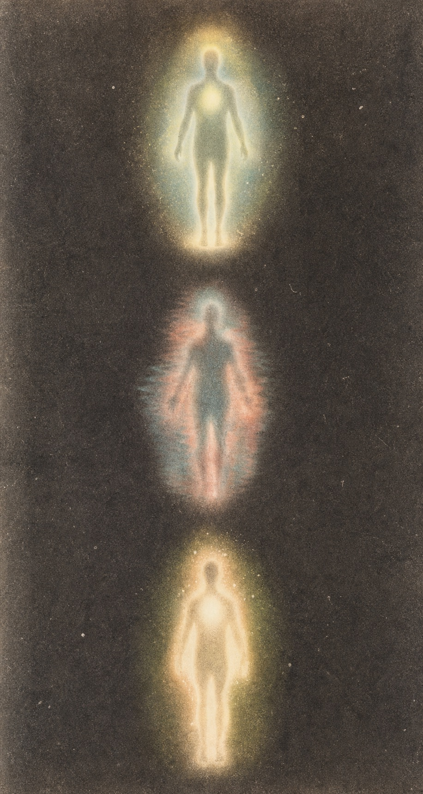

A PRIVATE BREATH PRACTICE / 01
빛이 닿는 자리에서
숨을 한 번 고릅니다.
오늘의 마음을 해결하려 하지 않고,
몸 안에서 먼저 느껴지는 온도와 움직임을 기록합니다.
INNER BODY / A STUDY IN QUIET ENERGY
01 / BREATHE
먼저 몸의 속도를
조금 늦춥니다.
준비되면 시작하세요
01:00 들이쉬고 · 머물고 · 내쉽니다화면을 바라보지 않아도 괜찮습니다. 턱과 어깨를 내려놓고, 숨이 닿는 곳만 느껴보세요.

02 / SENSE
지금의 에너지는
어떤 모습인가요?
좋거나 나쁜 상태를 고르는 일이 아닙니다. 지금 몸에 가장 가까운 감각 하나만 표시해보세요.
고요함
호흡의 길이가 자연스럽게 이어지는 상태입니다. 이 평온을 붙잡기보다 조용히 알아차려보세요.
오늘의 작은 돌봄: 창가에서 세 번 길게 호흡하기
03 / RECORD
오늘 몸이 알려준 것을
한 문장으로 남깁니다.
기록은 분석이 아니라 흔적입니다. 짧아도 충분합니다.
END OF PRACTICE
내 몸을 듣는 일은
아주 조용한 귀환입니다.
오늘 남긴 감각은 이 기기에 조용히 보관됩니다.
처음으로 돌아가기 ↑